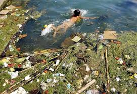
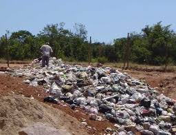
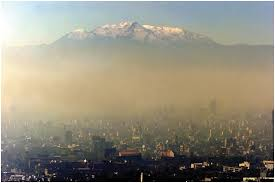
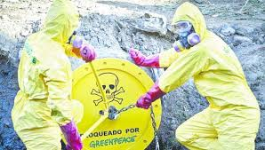
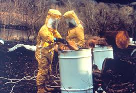
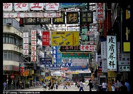
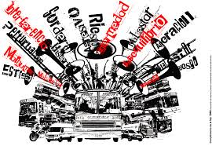

Contaminación 1
CONTAMINACIÓN DEL AGUA

Es la incorporación al agua de materias extrañas, como microorganismos, productos químicos, residuos industriales, y de
otros tipos o aguas residuales.Estas materias deterioran la calidad del agua y la hacen inútil para los usos pretendidos.
Contaminación 2
CONTAMINACIÓN DEL SUELO

es la incorporación al suelo de materias extrañas, como basura, desechos tóxicos, productos químicos, y desechos
industriales. La contaminación del suelo produce un desequilibrio físico, químico y biológico que afecta negativamente las plantas, animales y humanos.
Contaminación 3
CONTAMINACIÓN DEL AIRE

es la adición dañina a la atmósfera de gases tóxicos, CO, u otros que afectan el normal desarrollo de plantas, animales y que afectan negativamente la salud de los humanos
Contaminación 4
CONTAMINACIÓN QUIMICA

refiere a cualquiera de las comentadas en los apartados anteriores, en las que un determinado compuesto químico se introduce en el medio.
Contaminación 5
CONTAMINACIÓN RADIACTIVA

es aquella derivada de la dispersión de materiales radiactivos, como el uranio enriquecido, usados en instalaciones médicas o de investigación, reactores nucleares de centrales energéticas, munición blindada con metal aleado con uranio, submarinos, satélites artificiales, etc., y que se produce por un accidente (como el accidente de Chernóbil), por el uso ó por la disposición final deliberada de los residuos radiactivos.
Contaminación 6
CONTAMINACIÓN VISUAL

se produce por instalaciones industriales; Exceso de avisos publicitarios e informativos.
Luces y colores intensos
Cambios del paisaje natural por actividades humanas (campamentos petroleros, campamentos mineros, crecimiento de las ciudades, etc.).
Contaminación 7
CONTAMINACIÓN SONORA

Consiste en los ruidos molestos provocados por los seres humanos que afectan la tranquilidad y salud de todos los seres vivos.